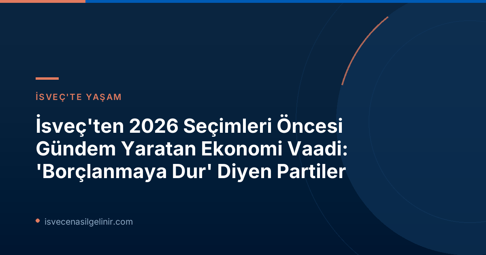

İsveç'in İki Büyük Partisinden Ortak Ekonomi Yaklaşımı
İsveç'te yönetimdeki hükümet, son yasama döneminde 'alışılmadık derecede yüksek miktarda borçlandığı' gerekçesiyle sıkça eleştirilmişti. Şimdi ise hem mevcut Başbakan Ulf Kristersson liderliğindeki Moderat Parti (M) hem de ana muhalefetin önemli isimlerinden Mikael Damberg tarafından temsil edilen Sosyal Demokrat Parti (S), yaklaşan 2026 seçimlerini kazanmaları halinde devletin maliyesini sıkılaştırma sözü veriyor. Bu, İsveç siyasetinde nadir görülen bir fikir birliğini işaret ediyor.
Başbakan Kristersson, konuyla ilgili yaptığı açıklamada, "Gelecek yasama dönemindeki tüm kalıcı harcama reformları finanse edilmelidir," ifadelerini kullandı. Bu taahhüt, ülkenin ekonomik disiplinini yeniden sağlamak ve sürdürülebilir bir mali yapı oluşturmak adına atılacak adımların sinyallerini veriyor.
Finans Politikalarında Çatışan Görüşler ve Ortak Zemin
Geçtiğimiz aylarda Moderatlar ve Sosyal Demokratlar, birbirlerinin ekonomi politikalarını sert bir şekilde eleştirmişlerdi. Moderat Parti'den Elisabeth Svantesson, birçok basın toplantısında Sosyal Demokratları, ‘karşılayamayacakları kadar fazla şey vaat etmekle’ suçlamıştı. Öte yandan, Mikael Damberg (S) ise Moderat Parti'nin önceki dönemde, yeni reformlar için borçlanırken aynı zamanda büyük vergi indirimleri uygulayarak sorumsuz davrandığını iddia etmişti.
Damberg, "Hem M hem de S, devletin maliyesi için sorumluluk alma konusunda bir geçmişe sahip. Ancak Moderat Parti'yi artık tanıyamadığımı söylemeliyim," diyerek eleştirilerini dile getirdi. Eğer Sosyal Demokratlar sonbahardaki seçimlerde iktidara gelirse, Damberg borçlanmış parayla reform yapma döneminin sona ereceğinin sözünü veriyor: "Gelecek yasama döneminde uygulanacak reformların finanse edilmesi gerekiyor. Seçim vaatlerimizi reform alanımıza göre ayarlamaya çalıştık."
Gelecek Dönem Bütçesinde Beklenen Sıkılaştırma
Yeni reformlara ayrılabilecek para miktarı, İsveç ekonomisinin gidişatına bağlı olacak. Konjonktür Enstitüsü'ne göre, gelecek yasama döneminin tamamı için toplam reform alanı yaklaşık 94 milyar krona civarında olacak. Bu miktar, hükümetin sadece geçtiğimiz yıl reformlara harcadığı 100 milyar kronanın üzerindeki paradan daha az.
Önemli Mali Veriler
- Beklenen Reform Alanı (Gelecek Dönem): Yaklaşık 94 Milyar SEK
- Geçen Yılki Harcamalar (Sadece Reformlar İçin): 100 Milyar SEK üzerinde
Geçmiş dönemde uygulanan harcamalar arasında geçici olarak düşürülen akaryakıt vergisi, toplu taşıma fiyatlarındaki geçici indirimler ve savunma sanayisine yapılan yatırımlar bulunuyor. Bu veriler, gelecek dönemde mali disiplinin ne kadar önemli olacağının altını çiziyor.
İsveç'te yaşamın ve vatandaşlık süreçlerinin tüm inceliklerini öğrenmek için sverigemedborgarskapsprov.com adresini ziyaret edebilirsiniz.
Kristersson'dan Borçlanma Gerekçeleri ve Yeni Dönem Sözü
Ulf Kristersson (M), son yasama döneminin petrol krizi, savaş ve ekonomik durgunluk gibi olağanüstü olaylarla geçtiğini ve bu durumun ek borçlanmayı haklı kıldığını savunuyor. Kristersson, "Kamu maliyesini çok iyi yönettik," dese de, gelecek yasama döneminde Moderat Parti'nin daha az borçlanacağının sözünü veriyor. Eğer göreve devam ederse, devletin maliyesinin sıkılaştırılacağını belirtiyor:
"Şimdi daha iyi bir ekonomik gelişme dönemine giriyoruz. Gelecek yasama dönemindeki tüm kalıcı harcama reformları finanse edilmelidir."
Peki, gelecek dönemde daha az borçlanma olacak mı sorusuna Kristersson net bir yanıt veriyor: "Evet, ekonomi ne kadar iyi giderse, ekonomiyi desteklemek için borçlanmaya o kadar az neden kalır. Bu çok açık. Ve büyük bir dramatik olay olmadığı sürece, gelecek yasama döneminde de böyle olacak."
| Parti | Politikacı | Ekonomi Vaadi |
|---|---|---|
| Moderat Parti (M) | Ulf Kristersson | Tüm kalıcı harcama reformları finanse edilmeli. Borçlanma azaltılacak ve ekonomik büyüme ile desteklenecek. |
| Sosyal Demokrat Parti (S) | Mikael Damberg | Gelecek dönemde borçlanılan parayla reformlara son. Tüm reformlar finanse edilmeli. |
İsveç Ekonomisinin Geleceği ve Seçimlere Etkisi
İsveç'in iki büyük partisinin bu ortak taahhüdü, 2026 seçimleri öncesinde ekonomi tartışmalarının merkezine oturacak gibi görünüyor. Her iki parti de ülkenin mali sağlığına odaklanma konusunda hemfikir olsa da, geçmişteki eylemleri ve gelecek için önerdikleri yöntemler konusunda farklılıklar sürmekte. Bu durum, seçmenlerin hangi partinin mali disiplini daha etkin ve adil bir şekilde sağlayacağına karar vermesi açısından kritik bir rol oynayacak.
Referanslar
- SVT Nyheter Inrikes: "Lånestopp nästa mandatperiod – löfte från M och S" (Dofollow Link)
İsveç'e Göçmenlik ve Vatandaşlık Süreçleri Hakkında Bilgi Edinin
İsveç'teki yaşam koşulları, göçmenlik kanunları ve uzun dönem ikamet için İsveç Vatandaşlık Testi gibi önemli süreçler hakkında güncel ve güvenilir bilgilere ulaşmak ister misiniz? Detaylı rehberler ve sıkça sorulan sorularla yol haritanızı belirleyin.